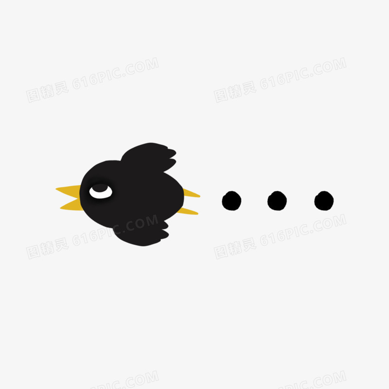

前言:冷笑話很好玩的，冷笑話是讓人覺得怎麼想都想不到連結的梗。 也許有共鳴，或淡淡的聽過就好，無傷大雅。什麼是冷笑話呢!問烏鴉吧!
中中:唉~012345678... 奇奇:怎咪啦看起來那咪難過?中中:無nine呀 奇奇:...
ex2.中中:我們有聽過一天一顆蘋果，遠離醫生一天。奇奇:對呀!中中:那奇奇知道哪一種水果可以幫助交朋友嘛?奇奇:是什麼?中中:是香蕉呀!奇奇:為什麼?中中:人一開始不認識的時候像平行線，認識了之後兩道線就會相交啦!奇奇:...
定義:指失敗的笑話，背後的幽默不容易被理解，或者，確實單調而且沒有任何幽默感...。 冷笑話在很多地方都看的到，書報雜誌、影片媒體等等， 一個冷笑話會不會受歡迎會受到聽者的影響，如果對方與你熟識， 那可以適時地增加歡樂氣氛，但如果是不熟的場合，有時反而會給對方留下奇怪的印象。